Computer Networking - A Top-Down Approach
Chapter 1: Introduction
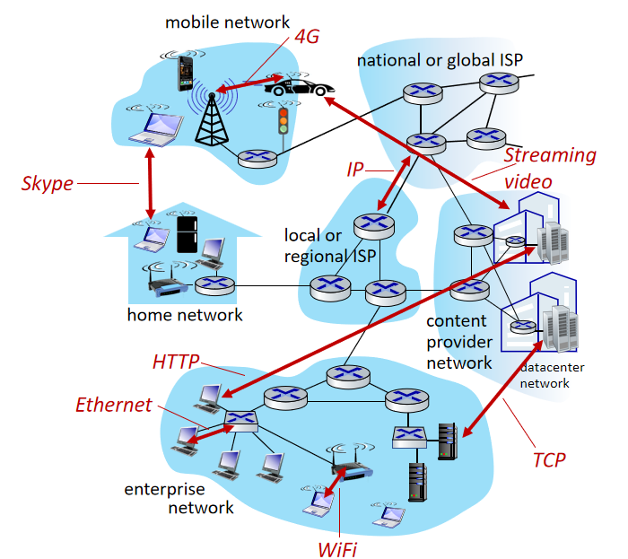
1 Network Edge
1.1 Host: sends packets of data
Hosts (= end systems, including clients and servers)
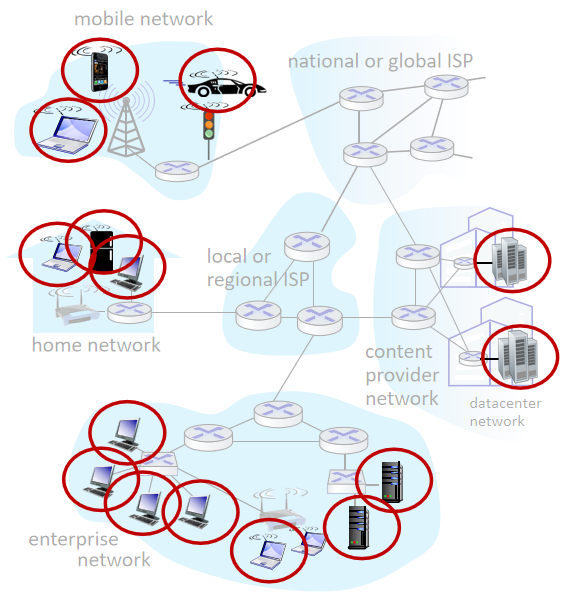
1.2 Links: physical media
Access network, physical media (wired, wireless communication links)
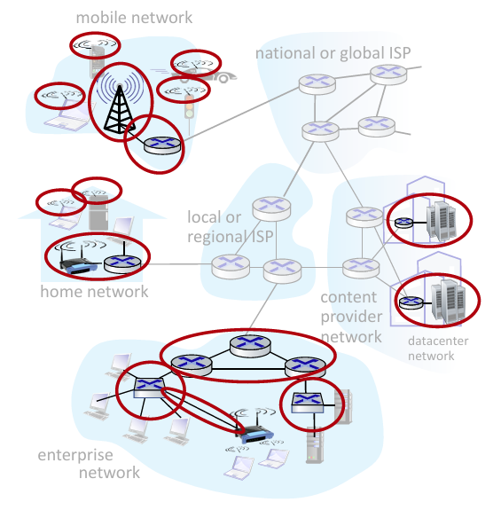
Categories: copper, fiber (carry light), wireless radios (electromagnetic spectrum) ...
Q: How to connect end systems to edge router?
- Residential access nets
- Institutional access networks (school, company)
- Mobile access networks (WiFi, 4G/5G)
2 Network Core
- Interconnected routers
- Network of networks
2.1 Packet-switching
- Hosts break application-layer messages into packets
- Network forwards packets from one router to the next, across links on path from source to destination
Two key network-core functions
Forwarding: aka “switching”, local action: move arriving packets from router’s input link to appropriate router output link.
Routing: global action: determine source-destination paths taken by packets using routing algorithms.
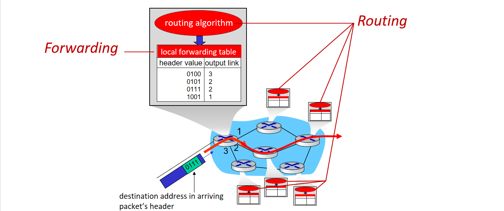
2.2 Store and Forward
Entire packet must arrive at router before it can be transmitted on next link.
Packet transmission delay:
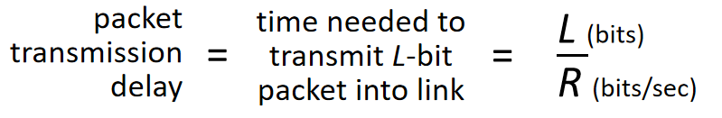
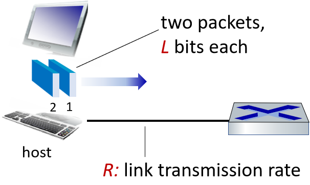
2.3 Queuing and Loss
Queueing occurs when work arrives faster than it can be serviced.
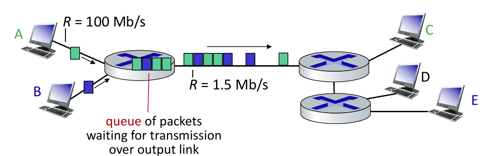
Packets can be dropped (lost) if memory (buffer) in router fills up.
An alternative: Circuit switching
End-end resources allocated to, reserved for “call” between source and destination, no sharing. (Commonly used in traditional telephone networks). In diagram, each link has four circuits. The call gets 2nd circuit in top link and 1st circuit in right link.
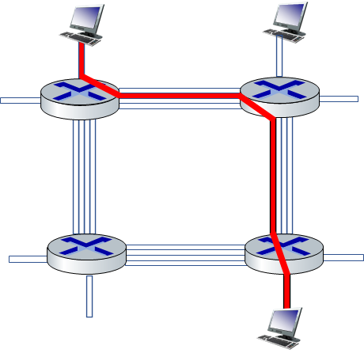
2.4 Internet structure
Hosts connect to Internet via access Internet Service Providers (ISPs). Any two hosts can send packets to each other.
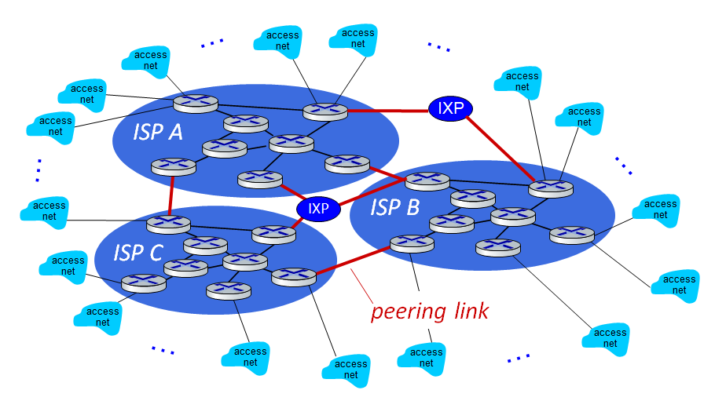
3 Protocols
Control sending, receiving of messages (e.g., HTTP, TCP, IP, WiFi, 4/5G, Ethernet).
Chapter 2: Application Layer
1 Principles of network applications
1.1 Paradigm
- Client-server paradigm (HTTP, IMAP, FTP):
- Server: Always-on, permanent IP, often in data centers.
- Clients: Contact server, intermittently connected, dynamic IP, no direct communication.
- Peer-peer (P2P) architecture (P2P file sharing [BitTorrent]):
- No always-on server, self-scalability, peers are intermittently connected and change IP addresses.
1.2 Processes communicating
Process: Program running within a host or in different hosts (communicate by exchanging messages).
Clients, servers: Initiates communication / waits to be contacted.
Sockets: Process sends/receives messages to/from its socket.
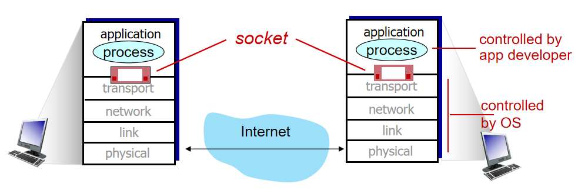
Addressing processes: Processes use identifier to receive messages. Identifier = IP address (host device, unique 32-bit) + port numbers (e.g., HTTP: 80, SMTP: 25).
1.3 Transport protocols services
- TCP: reliable, flow control
- UDP: unreliable
| Application | Application-Layer Protocol | Transport Protocol |
|---|---|---|
| File transfer | FTP | TCP |
| SMTP | TCP | |
| Web documents | HTTP | TCP |
| Internet telephony | SIP, RTP | TCP or UDP |
| Streaming audio/video | HTTP, DASH | TCP |
| Interactive games | Proprietary (WOW, FPS) | UDP or TCP |
2 Web and HTTP
2.1 HTTP: hypertext transfer protocol
Web’s application-layer protocol, client/server model, uses TCP, supports non-persistent (at most one object) and persistent HTTP (multiple objects).
Example for non-persistent HTTP: URL containing text, references to 10 jpeg images:
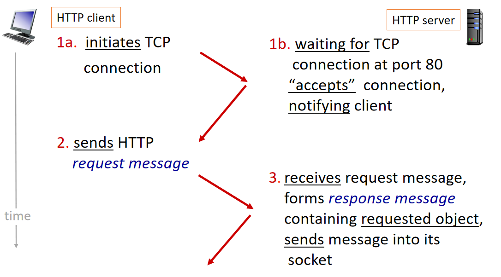
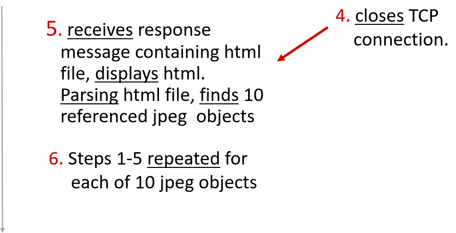
non-persistent HTTP issues: requires 2 RTTs per object, OS overhead for each TCP connection
non-persistentnon-persistent HTTP response time = 2RTT+ file transmission time
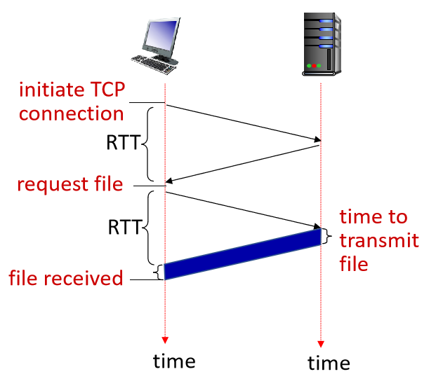
2.2 HTTP request message
Trying out HTTP (client side) for yourself
1. netcat to a Web server:
> ncat –C gaia.cs.umass.edu 802. type in a GET HTTP request:
GET /kurose_ross/interactive/index.php HTTP/1.1
Host: gaia.cs.umass.edu3. look at response message sent by HTTP server (or use Wireshark)
2.3 Cache
To satisfy client requests without involving origin server.
2.4 HTTP2
To decrease delay in multi-object HTTP requests.
3 E-mail, SMTP, IMAP
- user agents: reading, editing mail, e.g., Outlook
- mail servers: mailbox (incoming) & message queue (outgoing)
- mail transfer protocol: SMTP
gmail, Hotmail, Yahoo!Mail, etc. provides web-based interface on top of STMP (to send), IMAP (or POP) to retrieve e-mail messages
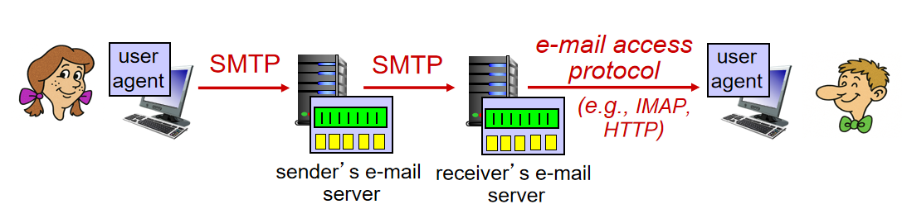
4 The Domain Name System DNS
distributed, hierarchical database implemented in hierarchy of many name servers
4.1 DNS services:
- hostname-to-IP-address translation
- ...
4.2 IP query steps
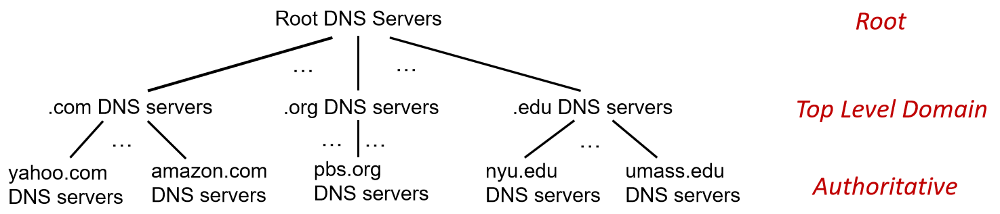
4.3 Local DNS name server
> ipconfig /allanswer from local cache, forwarding request into DNS hierarchy
4.4 Solutions
iterated query & recursive query
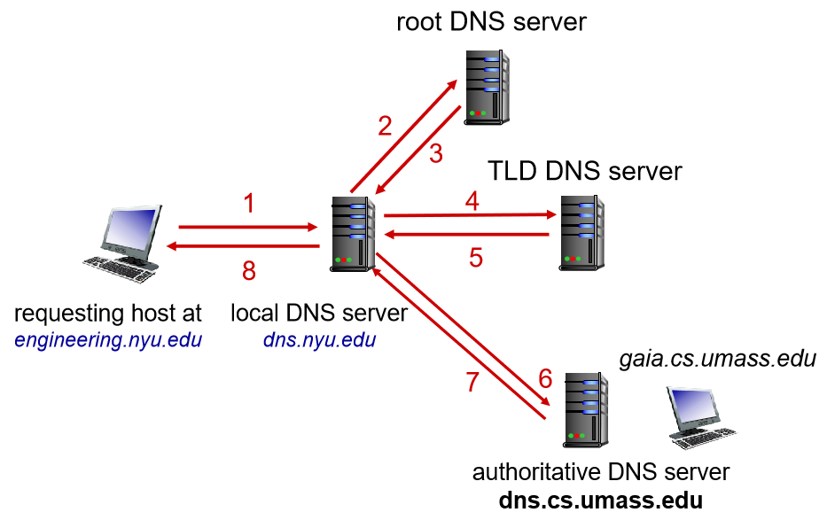
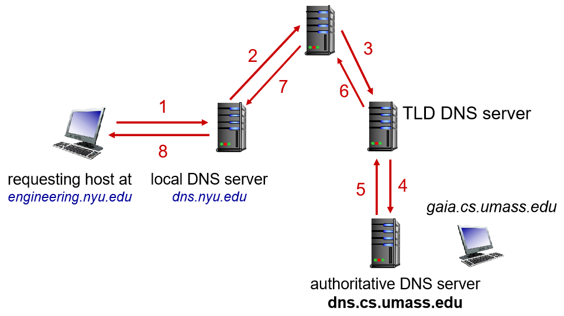
5 Video streaming and content distribution networks
Q: How does Netflix work?
A: stores copies of content (e.g., MADMEN) at its (worldwide) OpenConnect CDN (content distribution network) nodes
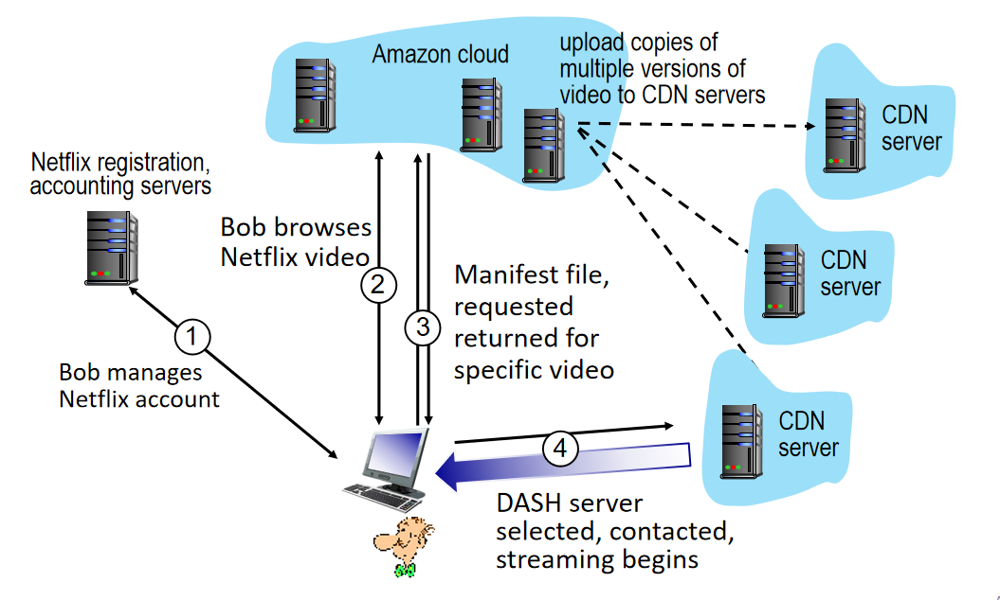
6 Socket programming with UDP and TCP
6.1 UDP client implement using Python
from socket import *
serverName = 'hostname'
serverPort = 12000
clientSocket = socket(AF_INET, SOCK_DGRAM) # create UDP socket;TCP:SOCK_STREAM
message = input('Input lowercase sentence:')
clientSocket.sendto(message.encode(), (serverName, serverPort)) # attach server name, port to message; send into socket
modifiedMessage, serverAddress = clientSocket.recvfrom(2048) # read reply date from socket
print(modifiedMessage.decode())
clientSocket.close()6.2 UDP server implement using Python
from socket import *
serverPort = 12000
serverSocket = socket(AF_INET, SOCK_DGRAM)
serverSocket.bind(('', serverPort))
print('The server is ready to receive')
while True:
message, clientAddress = serverSocket.recvfrom(2048)
modifiedMessage = message.decode().upper()
serverSocket.sendto(modifiedMessage.encode(), clientAddress)6.3 Waiting for multiple events
- wait for either:
- a reply from another end of the socket
- timeout: timer
- wait for replies from several different open sockets:
select(), multithreading
6.3.1 Timeouts in Python socket:
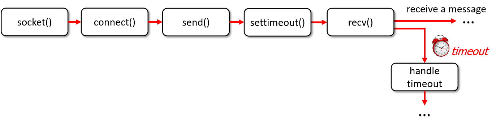
Chapter 3 Transport Layer
1 Transport-layer services
2 Multiplexing and demultiplexing
- multiplexing: add transport header
- demultiplexing: using header info deliver received segments to correct sockets
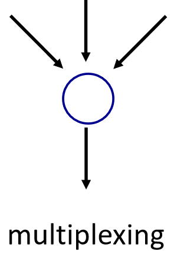
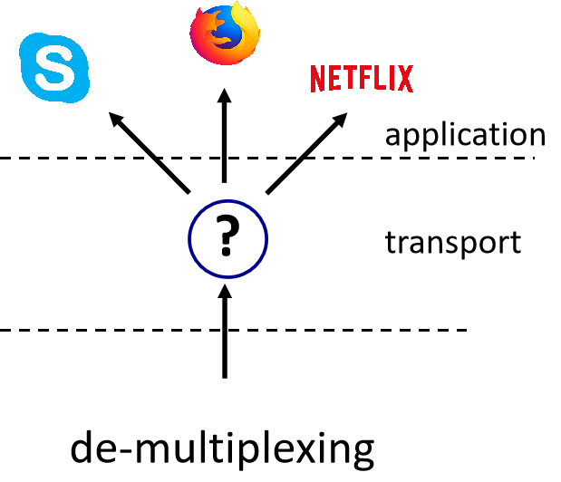
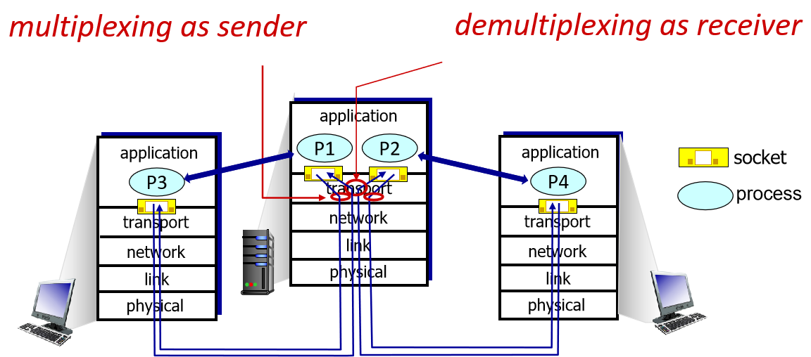
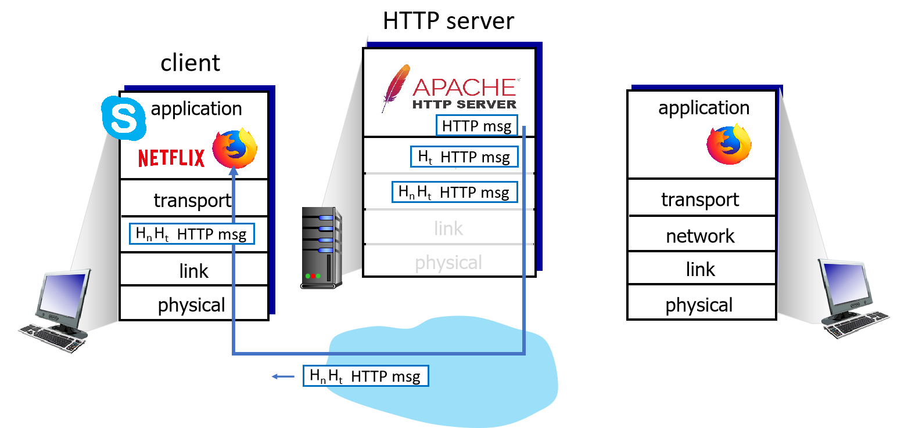
2.1 Multiplexing/demultiplexing happen at all layers.
2.2 UDP vs. TCP
- UDP: demultiplexing using destination port number (only)
- TCP: demultiplexing using 4-tuple: source + destination (IP addresses + port numbers)
3 Connectionless transport: UDP
connectionless: no handshaking between UDP sender and receiver
3.1 UDP characteristics
- no connection establishment (which can add RTT delay), thus no connection state at sender and receiver
- segments may be lost, out of order
- best effort service: "send and hope for the best"
- no congestion control, as fast as desired
- checksum helps with reliability (detect error)
3.2 UDP use
- streaming multimedia apps (loss tolerant, rate sensitive)
- DNS
- SNMP
- HTTP/3
if reliable transfer needed over UDP (e.g., HTTP/3): add needed reliability and congestion control at application layer
3.3 Transport layer actions
- receive segment from IP
- check UDP header value
- extract application-layer message
- demultiplexes message up to application via socket
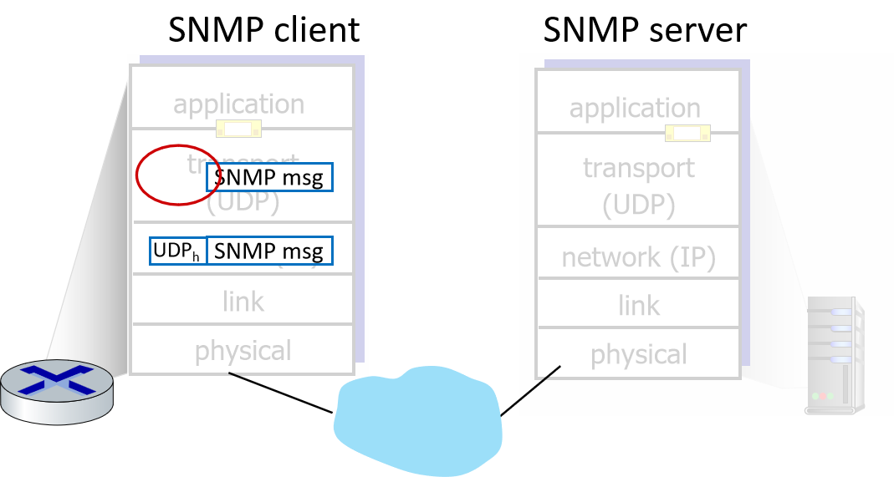
3.4 UDP segment
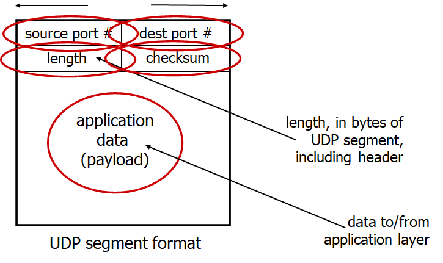
4 Principles of reliable data transfer
built on top of an unreliable network
4.1 The core problem: service abstraction vs. implementation
the fundamental challenge: providing a reliable data transfer service (where data is delivered in order and without error) using an underlying unreliable channel (which may corrupt, lose, or reorder packets)
4.1.1 The interface: reliable data transfer protocol (rdt)
sender & receiver application
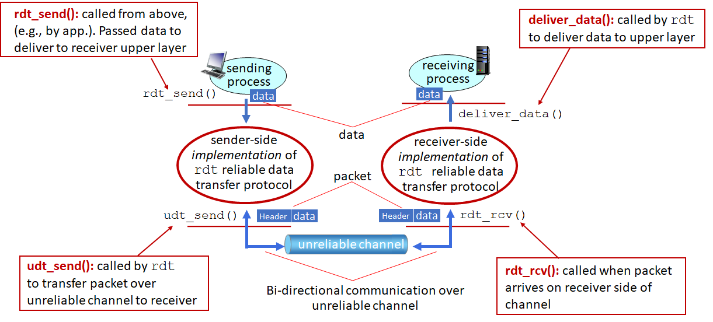
4.1.2 Finite state machines (FSMs)
modeling protocols to define sender and receiver states, events (e.g., packet arrival or timeout), and actions (e.g., sending and ACK)
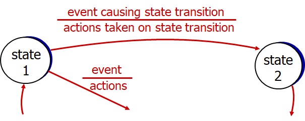
4.2 Reliable data transfer protocol (rdt)
rdt1.0: transfer over a reliable channel (no bit errors or loss of packets)
separate FSMs for sender and receiver
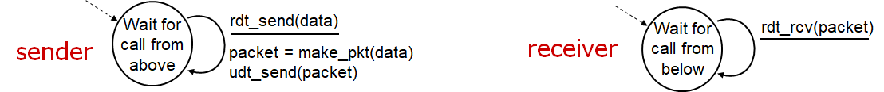
rdt2.0: transfer over a channel with bit errors (may flip bits in packet)
- detect: checksum
- recover: stop and wait, sender sends one packet, then waits for receiver's response
- acknowledgements (ACKs): receiver explicitly tells sender that pkt received OK
- negative acknowledgements (NAKs): receiver explicitly tells sender that pkt had errors (sender retransmits pkt on receipt of NAK)
- reliable but performance poor: utilization \(U_{sender}=\frac{L/R}{RTT+L/R}\) is small
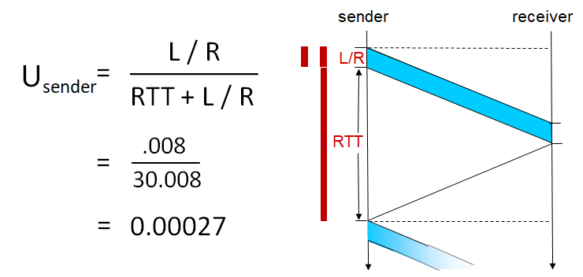
corrupted packet scenario:
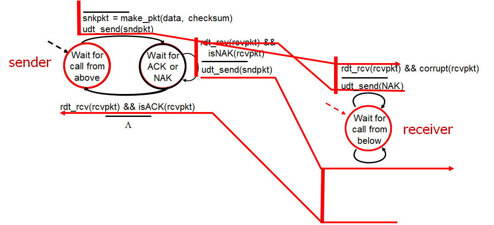
flaw:
- ACK/NAK corrupted: sender doesn't know what happened at receiver -> can't just retransmit (possible duplicate)
- handling duplicates: ACK/NAK corrupted -> sender retransmit + adds sequence number to each pkt -> receiver discards duplicate pkt
rdt2.1: handling garbled ACK/NAKs
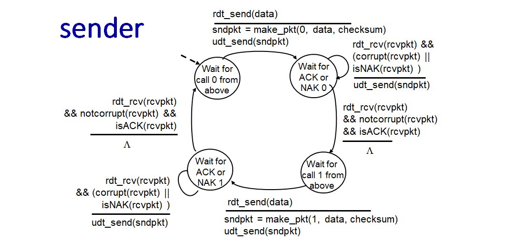
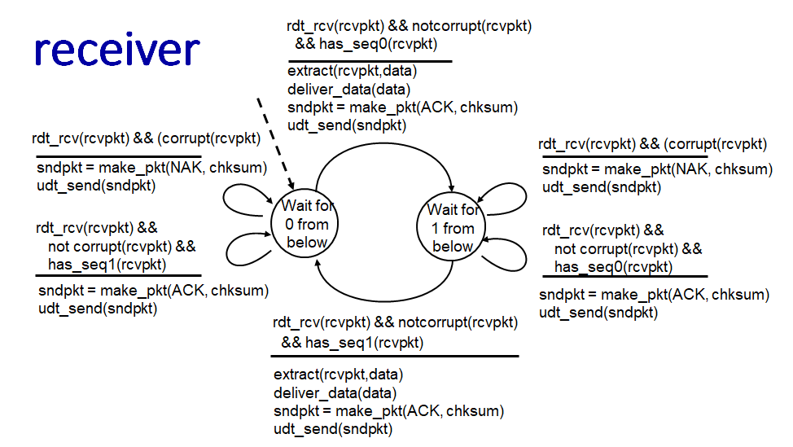
rdt2.2: a NAK-free protocol
rdt3.0: transfer over channels with errors and loss
- timers and timeouts: the sender uses a countdown timer to wait a "reasonable" amount of timer for an ACK. If the timer expires (timeout) before an ACK is received, the sender assumes the packet was lost and retransmits it.
- permature timeout may causes duplication in retransmiting -> the sequence number handles
- pipelining for performance: allows multiple "in-flight" , yet-to-be-acknowledged packets
- range of sequence numbers increased
- buffering at sender and/or receiver
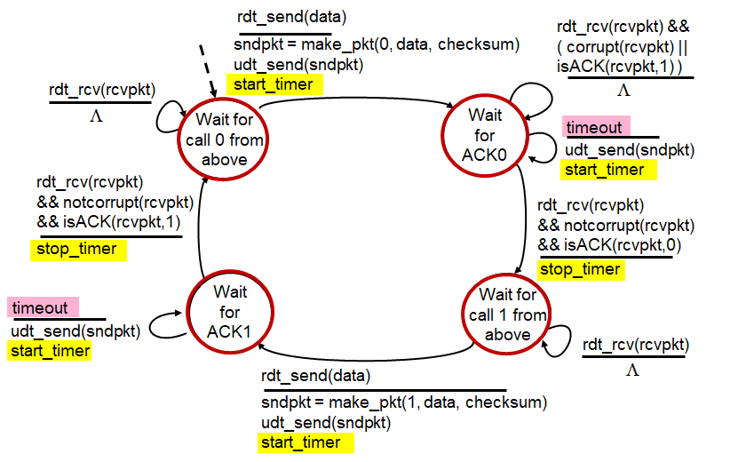
4.3 Two main approaches to pipelining
1. Go-Back-N (GBN)
- sender window: the sender is allowed a window of up to N unacknowledged packets
- cumulative ACK: the receiver sends ACK(n) to indicate that all packets up to and including sequence number n have been correctly received
- single timer: the sender maintains a timer for the oldest in-flight packet. If this timer expires, the sender retransmits all unacknowledged packets in the window
- receiver behavior: discards out-of-order packets and resends ACK for the highest in-order seq # packet received so far
2. Selective Repeat (SR)
- individual ACKs: the receiver sends an ACK for each individual packet received
- buffering: the receiver buffers out-of-order packets to deliver them in-order to the application later
- multiple timers: a timer for each unacknowledged packet. On timeouts, retransmits only the specific packet that was lost
- window dilemma: the window size must be less than or equal to half the sequence number space, or the receiver cannot distinguish between a new packet and a retransmission of an old packet
5 Connection-oriented transport: TCP
- point-to-point: one sender, one receiver
- reliable, in-order byte stream: no "message boundaries" but
- pipelining: congestion and flow control set window size
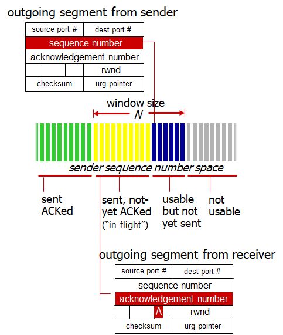
5.1 TCP segment structure
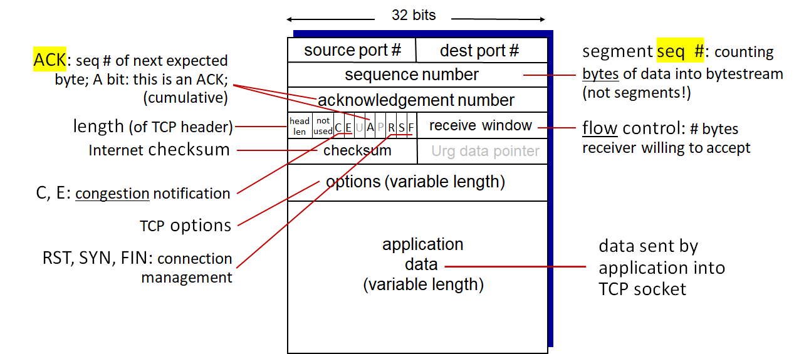
e.g., simple telnet scenario
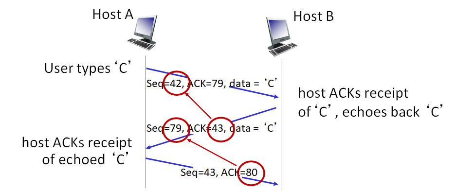
3.5.2 TCP round trip time, timeout
expiration interval: \(TimeoutInterval = EstimatedRTT + 4 \times DevRTT\)
- exponential weighted moving average (EWMA): \(EstimatedRTT = (1- \alpha) \times EstimatedRTT + \alpha \times SampleRTT\)
- EWMA of SampleRTT deviation from EstimatedRTT: \(DevRTT = (1-\beta) \times DevRTT + \beta \times |SampleRTT - EstimatedRTT|\)
- typical value: \(\alpha\) = 0.125, \(\beta\) = 0.25
timer: for oldest unACKed segment
events & actions
- sender
- data received from application
- timeout
- ACK received
- receiver
- in-order, expected seq #
- out-of-order, higher-than-expected seq #
retransmission scenarios
3.5.3 TCP flow control
receiver controls sender, so sender won't overflow receiver's buffer
- receiver "advertises" free buffer space in rwnd field in TCP header
- sender limits amount of unACKed ("in-flight") data to received rwnd
3.5.4 TCP connection management
handshake before exchanging data
- agree to establish connection (each knowing the other willing to establishing connection)
- agree on connection
3.5.5 Closing a TCP connection
- send TCP segment with FIN bit = 1
- respond to received FIN with ACK
3.6 TCP Congestion control
3.6.1 Scenarios
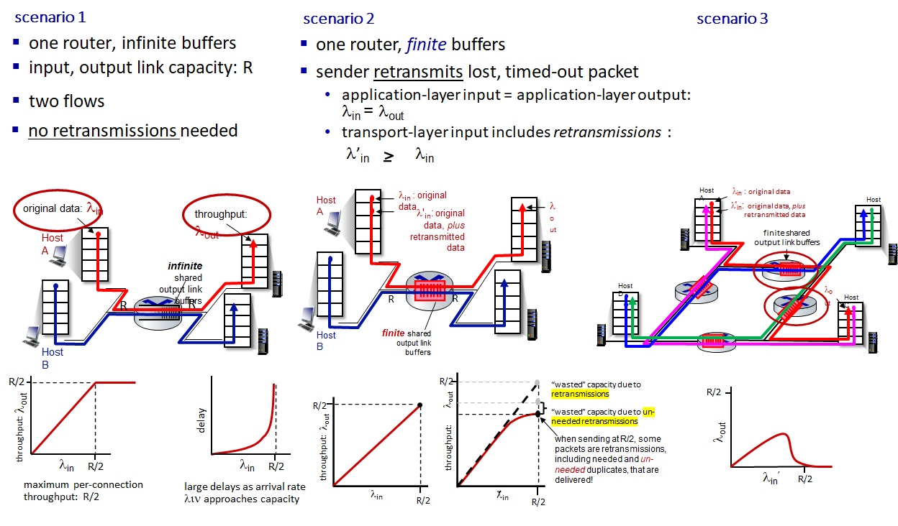
3.6.2 Approaches towards congestion control
- end-to-end congestion control:
- no explicit feedback from network
- congestion inferred from observed loss, delay
- approach taken by TCP
- network-assisted congestion control:
- routers provide direct feedback to sending/receiving hosts with flows passing through congested router
- may indicate congestion level or explicitly set sending rate
- TCP, ECN, ATM, DECbit protocols
3.6.3 TCP congestion control: AIMD
senders can:
- Additive Increase: increase sending rate until packet loss (congestion) occurs
- Multiplicative Decrease: then decrease sending rate on loss event
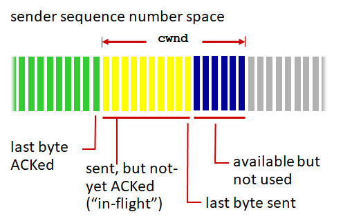
TCP rate: \(cwnd/RTT\) bytes/sec
- sender limits transmission: \(LastByteSent - LastByteAcked \le cwnd\)
- cwnd is dynamically adjusted in response to observed network congestion (implementing TCP congestion control)